Sotogahama
Sotogahama · Aomori
Sotogahama
Highlighted on the Aomori map.
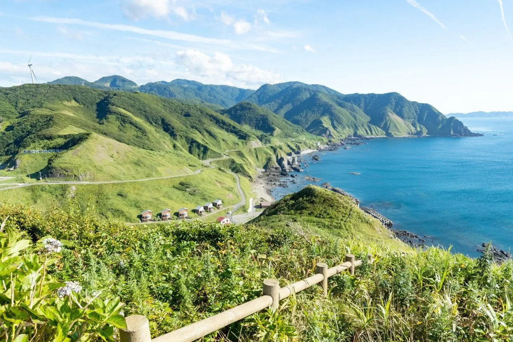
Stay
龍飛崎温泉 ホテル竜飛
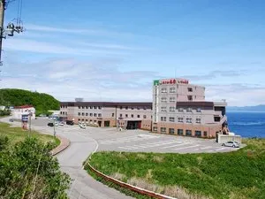
Tappi Saki Onsen Hoteru Tappi
Dining
マツオスーパー
Matsuosuupaa
秀鮨
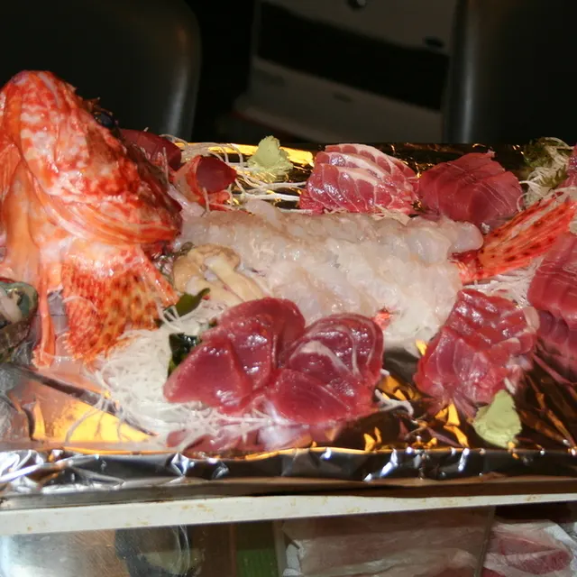
Shuu Sushi
田中商店
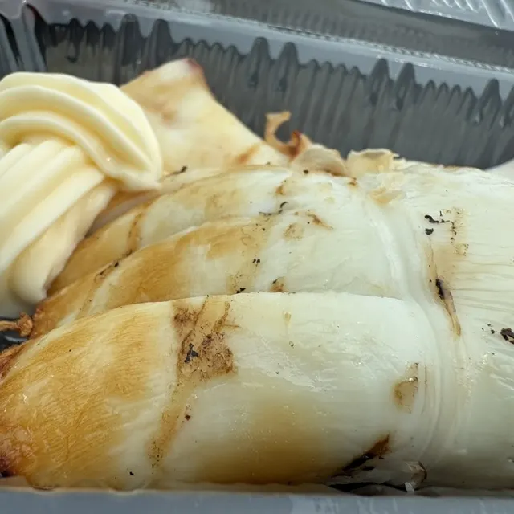
Tanaka Shouten
キタダリョカン
Kitadaryokan
石田旅館
Ishida Ryokan
とりやす
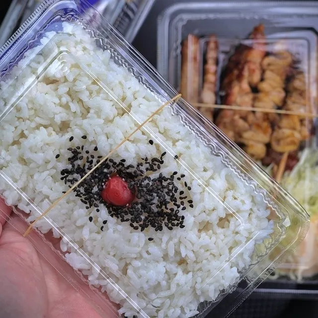
Toriyasu
龍飛旅館
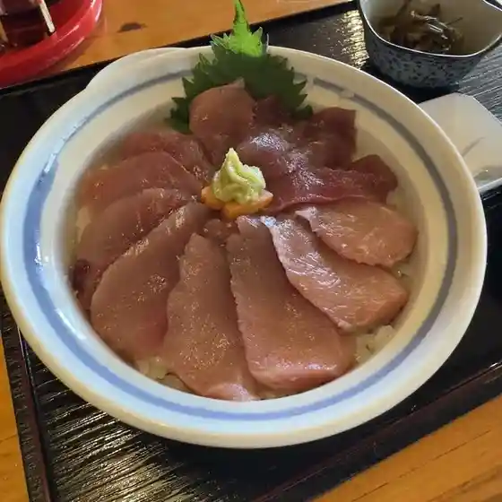
Tappi Ryokan
旅路
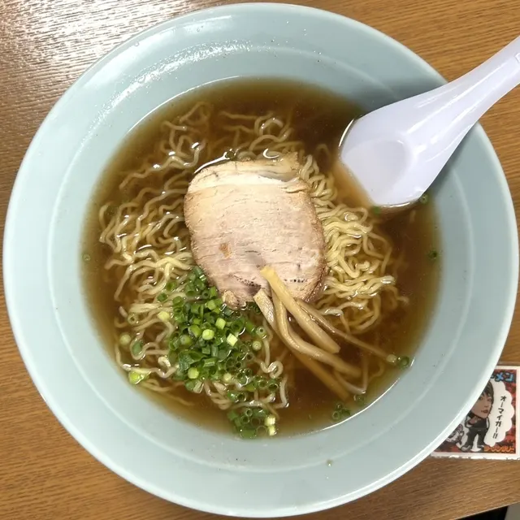
Tabiji
なりとみ
Naritomi
シェ・ロンフウ
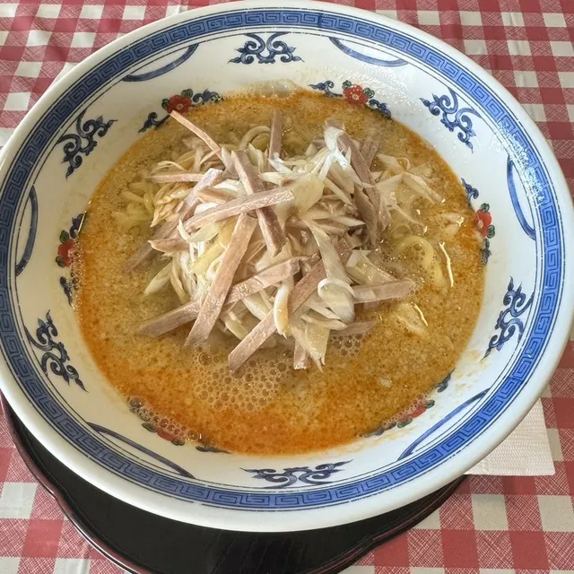
Shie Ronfuu
マエダストア 蟹田店
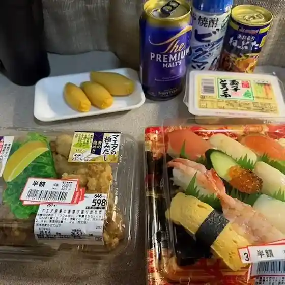
Maedasutoa Kanita Mise
ふじラーメン
Fuji Raamen
中野菓子舗
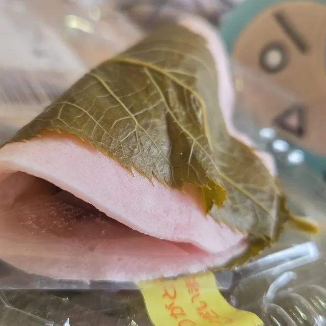
Nakano Kashi Ho
たっぴ
Tappi
竜飛 津軽屋
Tappi Tsugaru Ya
平舘不老ふ死温泉
Hiradate Furou Fu Shi Onsen
ウエル蟹
Ueru Kani
ファミリーマート 外ヶ浜三厩店
Famiriimaato Soto Ke Hama Minmaya Mise
海峡味処 紫陽花
Kaikyou Ajidokoro Ajisai
佐々木旅館
Sasaki Ryokan
道の駅みんまや 竜飛岬
Michi No Eki Minmaya Tappimisaki
ホテル竜飛
Hoteru Tappi
デイリーヤマザキ 蟹田店
Deiriiyamazaki Kanita Mise
野口珈琲店 マツオスーパー
Noguchi Koohii Mise Matsuosuupaa
Sights
Cape Tappi
Cape Tappi is the northern most point of the Tsugaru peninsula. The name, Tappi, which literally means "as dragon flies", was named after the strong winds that blow in the area, just as if a dragon flew.
National Route 339 (Staircase Highway)
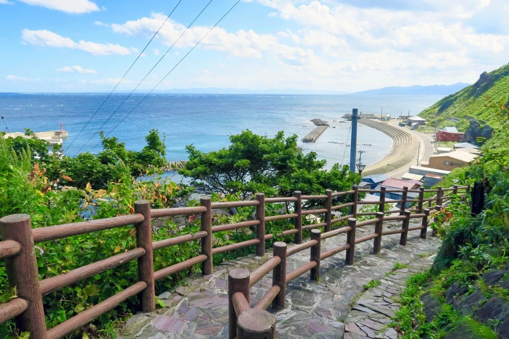
National Route 339 on Cape Tappi, the northernmost point of the Tsugaru Peninsula, is Japan's only "staircase highway." Despite being a national highway, it is unusual for the fact that it is inaccessible to c
Seikan Tunnel Memorial Hall
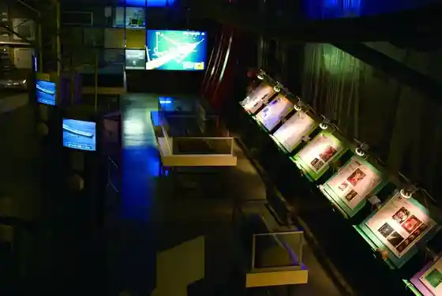
Seikan Tunnel, the longest undersea tunnel in the world, opened for service in March 1988, 42 years after it was first conceived.
Tsugaru Kaikyo Fuyugeshiki Song Monument
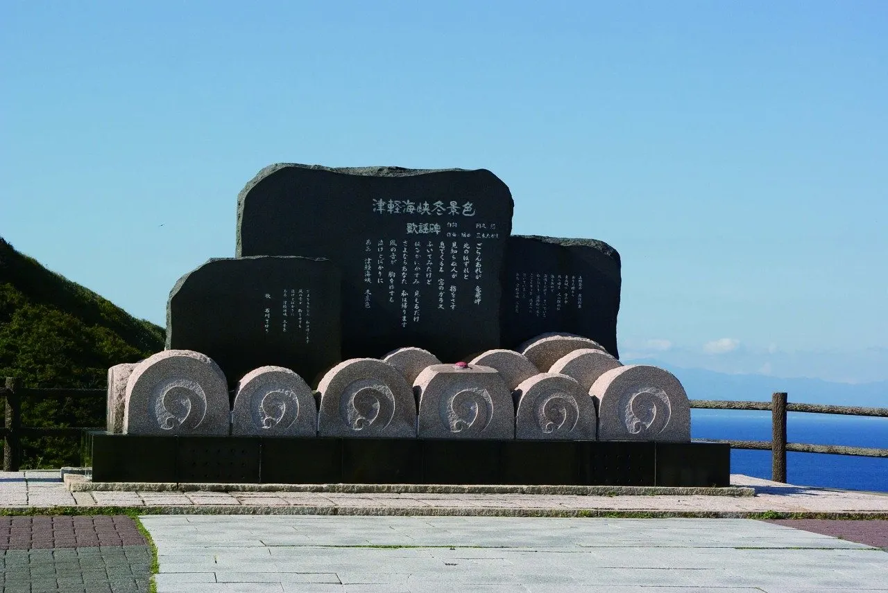
Monument near Tappi Lighthouse that plays Ishikawa Sayuri's famous song at the push of a button.
Tappizaki Seaside Park
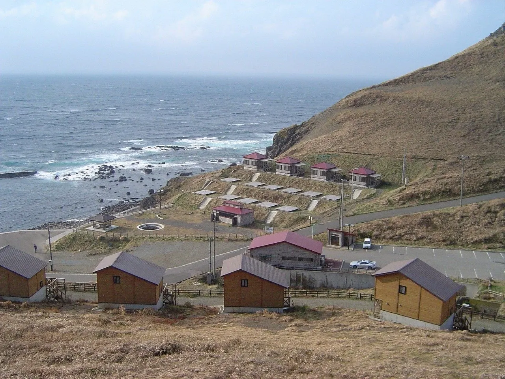
Lodging with three bungalows and six cabins facing the dramatic Tappi coast.
Sotogahama Odaiba Auto Village
This accommodation consists of 10 Nordic-style cottages and 20 car camping plots.
Gikeiji Temple
Temple tied to the legend that Minamoto no Yoshitsune crossed to Hokkaido on dragon horses from here.
Tatsudomari Line
National Route 339 runs through the Tsugaru Peninsula. This is a popular driving route of about 20km connecting Tappizaki to Kodomari in the northern part of the route.
Roadside Station Tairadate Oh! Daiba
Roadside station in Tsugaru Quasi-National Park near a pine-lined road and Mutsu Bay beach.
Hydrangea Road
About 15,000 hydrangeas along 15 km of Route 281 from Minmaya Station to Cape Tappi.